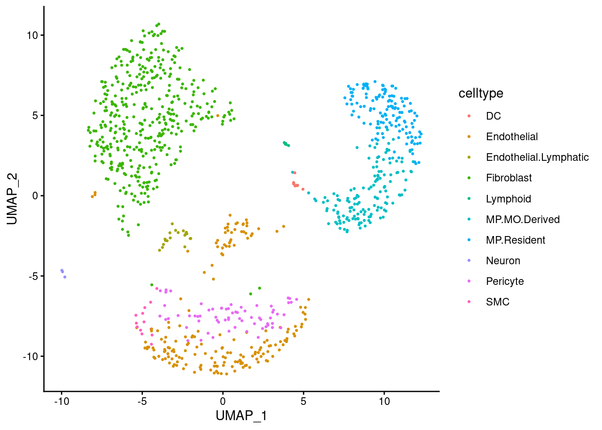
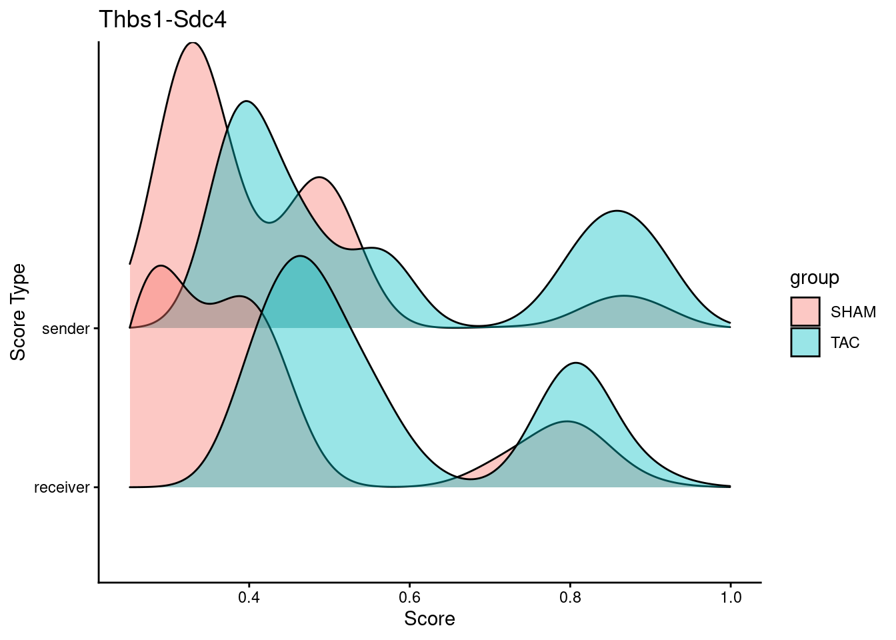

library(HyperCom)
library(dplyr)
library(ggplot2)
library(ggridges)
library(Matrix)
library(tidyr)HyperCom Overview
Last Updated: 2026-08-25
Load in example data
HyperCom requires three inputs:
A gene x cell matrix with genes as row names and cells as column names
A dataframe of cell metadata containing sample and optionally group columns which need to be specified as variables
A dataframe of ligand-receptor (LR) interactions. HyperCom contains 2 built in LR databases formatted properly:
CellChat human
cellchat.hs.lrdbCellChat mouse
cellchat.mm.lrdb
In this vignette we will use a 1000 cell subset of heart failure from Alexanian et al, 2021. This example subset is included in the package as alexanian2021.counts and alexanian2021.metadata.
counts <- alexanian2021.counts
dim(counts)[1] 17083 1000head(rownames(counts))[1] "Xkr4" "Sox17" "Mrpl15" "Lypla1" "Tcea1" "Rgs20" head(colnames(counts))[1] "AACCGCGTCCAGAGGA-2" "AACTCAGCACGAGGTA-2" "AACTCTTGTGCGAAAC-2"
[4] "AAGGAGCAGGATCGCA-2" "ACACCAAAGACCCACC-2" "ACACCGGAGCTACCGC-2"meta.data <- alexanian2021.metadata
sample.column <- "sample"
group.column <- "condition"
head(meta.data) sample condition celltype UMAP_1 UMAP_2
AACCGCGTCCAGAGGA-2 2 SHAM Endothelial 1.2676813 -10.036637
AACTCAGCACGAGGTA-2 2 SHAM Endothelial 1.7707077 -9.448688
AACTCTTGTGCGAAAC-2 2 SHAM Endothelial 0.2925013 -9.781118
AAGGAGCAGGATCGCA-2 2 SHAM Endothelial 1.1058826 -10.454998
ACACCAAAGACCCACC-2 2 SHAM Endothelial -3.3748763 -10.034042
ACACCGGAGCTACCGC-2 2 SHAM Endothelial 3.9700553 -8.899605ggplot(meta.data, aes(x=UMAP_1, y=UMAP_2, colour=celltype)) +
geom_point(size=0.5) +
theme_classic()
For the LR interactions we will use the CellChat murine database.
lrdb <- cellchat.mm.lrdb
dim(lrdb)[1] 2377 6head(lrdb, 2) interaction ligand r1 r2 r3 r4
1 TGFB1_TGFBR1_TGFBR2 Tgfb1 Tgfbr1 Tgfbr2 <NA> <NA>
2 TGFB2_TGFBR1_TGFBR2 Tgfb2 Tgfbr1 Tgfbr2 <NA> <NA>Running HyperCom
The standard pipeline can be run using the HyperCom function. This vignette details each component function of the pipeline.
HyperCom(outdir="overview", lrdb=cellchat.mm.lrdb, counts=alexanian2021.counts,
metadata=alexanian2021.metadata, sample="sample",
group="condition", keep=NULL,
significance=FALSE, parallel=FALSE, cl=NULL)Preprocessing
In order to reduce memory usage, we first filter the counts matrix to only genes present in the LR interactions with expression greater than 0. The function also transposes the matrix. We can also use the load_seurat function to directly complete this step from a Seurat v5 object.
lr.counts <- filter_counts(counts=counts, lrdb=lrdb, outfile=NULL)
dim(lr.counts)[1] 1000 663Next we filter the ligand receptor interactions to only interactions where all genes are present in the filtered expression matrix.
lrs <- generate_lrs_table(counts=lr.counts, lrdb=lrdb, outfile=NULL)
dim(lrs)[1] 1042 5Generating Hypergraph
To generate the hyperedges, which are edges that contain multiple nodes, we use the expression matrix LR interaction to create 2 types of hyperedges:
expression edges - edges containing cells that express a given ligand or receptor
interaction edges - edges containing the genes that comprise an LR interaction
HyperCom represents these hyperedges as a dataframe with an edge and node column where the node belongs to the edge. The weight is set to 1 for each edge.
hyperedges <- generate_hyperedges(counts=lr.counts, lrs=lrs, outfile=NULL)
head(hyperedges, 2)# A tibble: 2 × 3
edge node weight
<chr> <chr> <dbl>
1 TGFB1_TGFBR1_TGFBR2 Tgfb1 1
2 TGFB1_TGFBR1_TGFBR2 Tgfbr1 1We can represent this hypergraph as an adjacency matrix where the nodes are the cells, ligand genes, and receptor genes. Each entry is the number hyperedges shared by nodes.
adj <- generate_adjacency_matrix(hyperedges=hyperedges, outfile=NULL)
dim(adj)[1] 1663 1663Calculating Network Connectivity
In order to calculate the network connectivity of the hypergraph we perform a random walk on the adjacency matrix to produce an influence matrix.
infMat <- generate_infMat(adj=adj, outfile=NULL)
dim(infMat)[1] 1663 1663Downstream Analysis
To account for genes now being present in the matrices, we then process the metadata to contain information on the genes as well as cell metadata. Additionally to reduce memory, we reduce the number of columns to just node, sample, and group. Optionally other metadata columns can be kept.
metadata <- generate_metadata(infMat=infMat, metadata=meta.data,
sample=sample.column, group=group.column,
keep=c(), outfile=NULL)
head(metadata) cell sample group
1 AAAGATGCACAGATTC-3 3 TAC
2 AAAGATGCAGCTCGCA-3 3 TAC
3 AAAGATGCAGGTCTCG-3 3 TAC
4 AAAGATGGTGTTTGGT-2 2 SHAM
5 AAAGTAGAGGAGTTTA-2 2 SHAM
6 AAAGTAGCACATTTCT-2 2 SHAMIdentifying Important LR Pairs
We can also identify important LR pairs by using HyperCom scoring on LR pairs. This prioritization scores LR pairs to find highly communicative LR pairs that are optionally group specific. By default gene expression is weighted at 1 for recovery mode, but a vector of any number of values between 0 and 1 can be supplied A p-value can be calculated for each LR pair, but doing so will vastly increase the time to run. By default the significance arg is FALSE. The prioritize_lr function can be run sequentially or parallelly and by default the parallel arg is FALSE. The parallel implementation uses the parallelly package, but the cl can be supplied any object of class cluster depending on your system’s architecture.
priority <- prioritize_lr(lrs=lrs, adj=adj, infMat=infMat, metadata=metadata,
weights = c(1), significance=FALSE, parallel=TRUE,
cl=NULL, outdir=NULL)[1] 1head(priority[[1]]) interaction ligand r1 r2 r3 priority
1 THBS1_SDC4 Thbs1 Sdc4 <NA> <NA> 0.3313764
2 PGF_VEGFR1 Pgf Flt1 <NA> <NA> 0.3179562
3 COMP_SDC4 Comp Sdc4 <NA> <NA> 0.2923955
4 FN1_SDC4 Fn1 Sdc4 <NA> <NA> 0.2717061
5 POSTN_ITGAV_ITGB5 Postn Itgav Itgb5 <NA> 0.2651227
6 CCL4_CCR5 Ccl4 Ccr5 <NA> <NA> 0.2645498We see that Thbs1-Sdc4 is the highest scoring LR pair. We can calculate HyperCom scores for this pair. As a note, the score_hypercom function can also take a vector of receptor genes if the receptor is a complex.
Thbs1_Sdc4 <- score_hypercom(infMat=infMat, metadata=metadata, ligand="Thbs1",
receptors="Sdc4")
head(Thbs1_Sdc4[, c(1, 2, 3, 6, 7)]) cell sender receiver max hypercom
1 ATTATCCAGCTACCGC-3 0.4554808 0.9505336 0.9505336 0.6882292
2 CGTTAGAGTTACGCGC-3 0.4754217 0.9072661 0.9072661 0.6345970
3 ACTGTCCCAATAACGA-2 0.4947958 0.9135973 0.9135973 0.6245427
4 TCTCTAATCTTTAGTC-2 0.3524036 0.8681149 0.8681149 0.6053723
5 CTGAAGTAGTCGTTTG-3 0.3960002 0.8620137 0.8620137 0.6044511
6 CATTATCTCTCTGCTG-2 0.3319691 0.8752518 0.8752518 0.6017978If we plot the sender and receiver score we see both higher densities of sender and receiver cells in TAC.
Thbs1_Sdc4 <- left_join(Thbs1_Sdc4, metadata, by=join_by(cell))
melt.Thbs1_Sdc4 <- pivot_longer(dplyr::select(Thbs1_Sdc4, c(cell, group, sender, receiver)), !c(cell, group), names_to = "type", values_to = "score")
ggplot(melt.Thbs1_Sdc4, aes(x = score, y = type, fill=group)) +
geom_density_ridges(alpha=0.4) +
xlim(0.25, 1) +
xlab("Score") +
ylab("Score Type") +
ggtitle("Thbs1-Sdc4") +
theme_classic()Picking joint bandwidth of 0.0387
sessionInfo()R version 4.4.0 (2024-04-24)
Platform: x86_64-pc-linux-gnu
Running under: AlmaLinux 8.10 (Cerulean Leopard)
Matrix products: default
BLAS/LAPACK: FlexiBLAS NETLIB; LAPACK version 3.12.0
locale:
[1] LC_CTYPE=en_US.UTF-8 LC_NUMERIC=C
[3] LC_TIME=en_US.UTF-8 LC_COLLATE=en_US.UTF-8
[5] LC_MONETARY=en_US.UTF-8 LC_MESSAGES=en_US.UTF-8
[7] LC_PAPER=en_US.UTF-8 LC_NAME=C
[9] LC_ADDRESS=C LC_TELEPHONE=C
[11] LC_MEASUREMENT=en_US.UTF-8 LC_IDENTIFICATION=C
time zone: America/New_York
tzcode source: system (glibc)
attached base packages:
[1] stats graphics grDevices utils datasets methods base
other attached packages:
[1] tidyr_1.3.2 Matrix_1.7-0 ggridges_0.5.7
[4] ggplot2_4.0.0 dplyr_1.2.1 HyperCom_0.0.0.9000
loaded via a namespace (and not attached):
[1] gtable_0.3.6 jsonlite_2.0.0 compiler_4.4.0 Rcpp_1.1.2
[5] tidyselect_1.2.1 collapse_2.1.7 parallel_4.4.0 dichromat_2.0-0.1
[9] scales_1.4.0 yaml_2.3.10 fastmap_1.2.0 lattice_0.22-6
[13] R6_2.6.1 labeling_0.4.3 generics_0.1.4 knitr_1.50
[17] iterators_1.0.14 htmlwidgets_1.6.4 tibble_3.3.1 zigg_0.0.2
[21] pillar_1.11.1 RColorBrewer_1.1-3 rlang_1.3.0 utf8_1.2.6
[25] xfun_0.52 S7_0.2.0 RcppParallel_6.2.0 doParallel_1.0.17
[29] cli_3.6.6 withr_3.0.3 magrittr_2.0.5 foreach_1.5.2
[33] digest_0.6.37 grid_4.4.0 rstudioapi_0.17.1 lifecycle_1.0.5
[37] vctrs_0.7.3 Rfast_2.1.5.2 evaluate_1.0.5 glue_1.8.1
[41] farver_2.1.2 codetools_0.2-20 parallelly_1.48.0 rmarkdown_2.31
[45] purrr_1.2.2 tools_4.4.0 pkgconfig_2.0.3 htmltools_0.5.8.1